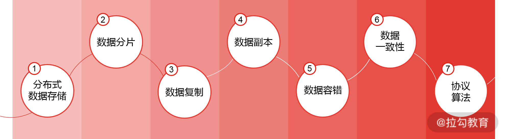
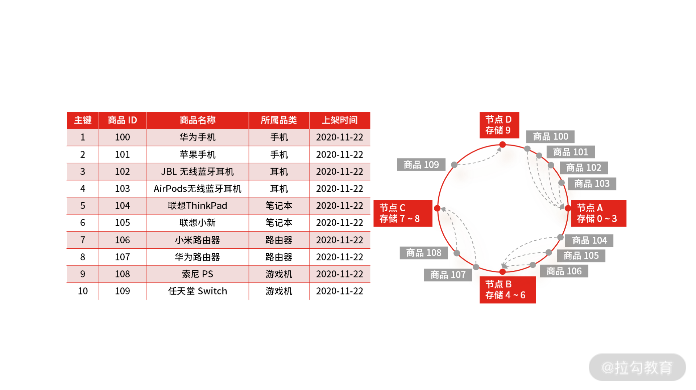
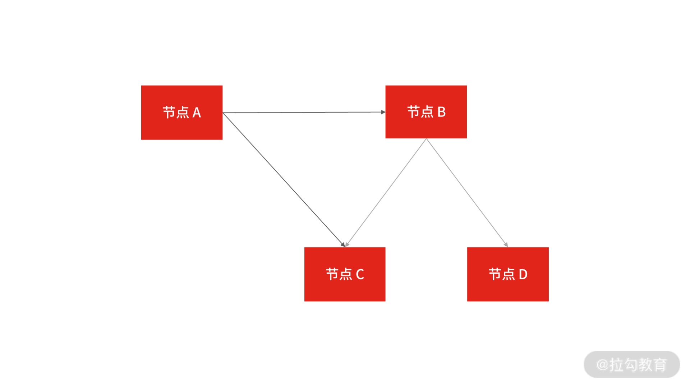

- 00 开篇词 中高级研发面试，逃不开架构设计这一环.md.html
- 01 研发工程师想提升面试竞争力，该具备这三个技术认知.md.html
- 02 研发工程师如何用架构师视角回答架构设计方案？.md.html
- 03 面试官如何考察与 CAP 有关的分布式理论？.md.html
- 04 亿级商品存储下，如何深度回答分布式系统的原理性问题？.md.html
- 05 海量并发场景下，如何回答分布式事务一致性问题？.md.html
- 06 分布式系统中，如何回答锁的实现原理？.md.html
- 07 RPC：如何在面试中展现出“造轮子”的能力？.md.html
- 08 MQ：如何回答消息队列的丢失、重复与积压问题.md.html
- 08 案例串联 如何让系统抗住双十一的预约抢购活动？.md.html
- 09 如何回答 MySQL 的索引原理与优化问题？.md.html
- 10 如何回答 MySQL 的事务隔离级别和锁的机制？.md.html
- 11 读多写少：MySQL 如何优化数据查询方案？.md.html
- 12 写多读少：MySQL 如何优化数据存储方案？.md.html
- 13 缓存原理：应对面试你要掌握 Redis 哪些原理？.md.html
- 14 缓存策略：面试中如何回答缓存穿透、雪崩等问题？.md.html
- 15 如何向面试官证明你做的系统是高可用的？.md.html
- 16 如何从架构师角度回答系统容错、降级等高可用问题？.md.html
- 17 如何向面试官证明你做的系统是高性能的？.md.html
- 18 如何从架构师角度回答怎么应对千万级流量的问题？.md.html
- 19 彩蛋 互联网架构设计面试，你需要掌握的知识体系.md.html
- 结束语 程序员的道、术、势.md.html
- 捐赠
04 亿级商品存储下，如何深度回答分布式系统的原理性问题？
上一讲，我结合 CAP 理论为你讲解了分布式系统的原理性问题，并通过理论引出了在做分布式系统设计时需要考虑和解决的复杂点，然后为你梳理了在分布式系统中，你需要掌握的技术知识体系，以及该具备的架构师思维。
这一讲，我将以“亿级商品存储设计”为背景，深度考察你对分布式原理的掌握程度，其中会涉及海量数据的存储、分片、复制，以及一致性共识算法的答题思路。
案例背景
先来回顾一下，你在面试时，有没有被问到以下几个问题：
- 如何设计一个支持海量商品存储的高扩展性架构？
- 在做分库分表时，基于 Hash 取模和一致性 Hash 的数据分片是如何实现的？
- 在电商大促时期，如何对热点商品数据做存储策略 ？
- 强一致性和最终一致性的数据共识算法是如何实现的 ？
在分布式系统中，核心的考察点包括了分布式系统中数据的存储、分布、复制，以及相关协议和算法，上述问题都与此相关。而在实际面试中，面试官通常会提出一个业务场景，如“如何设计海量商品数据的存储？”然后在候选者回答问题的过程中，通过一环扣一环的提问，把各考察点串联在一起。
案例分析
在互联网业务场景下，为了解决单台存储设备的局限性，会把数据分布到多台存储节点上，以此实现数据的水平扩展。既然要把数据分布到多个节点，就会存在数据分片的问题。数据分片即按照一定的规则将数据路由到相应的存储节点中，从而降低单存储节点带来的读写压力。常见的实现方案有 Hash（哈希分片）与 Range（范围分片）。
明确了如何分片后，就需要对数据进行复制，数据复制会产生副本，而副本是分布式存储系统解决高可用的唯一手段，这也是我们熟知的主从模式，又叫 master-slave。在分布式存储系统中，通常会设置数据副本的主从节点，当主节点出现故障时，从节点可以替代主节点提供服务，从而保证业务正常运行。
那么如何让从节点替代主节点呢？这就涉及数据一致性的问题了（只有在主从节点数据一致的情况下，才能进行主从替换）。
关于数据一致性，通常要考虑一致性强弱（即强一致性和最终一致性的问题）。而要解决一致性的问题，则要进行一系列的一致性协议：如两阶段提交协议（Two-Phrase Commit，2PC）、Paxos 协议选举、Raft 协议、Gossip 协议。
所以分布式数据存储的问题可以分成：数据分片、数据复制，以及数据一致性带来的相关问题。接下来，我会针对这些问题，提炼出面试中最为核心和高频的考察点。

案例解答
就如我开篇提到的，面试官往往会把“案例背景中”的四个问题串联到具体的场景中，以具体的场景设问，比如“假设你是一家电商网站的架构师，现在要将原有单点上百 G 的商品做数据重构，存储到多个节点上，你会如何设计存储策略 ？”
因为是商品存储扩容的设计问题，很容易想到做数据的分库分表，也就是重新设计数据的分片规则，常用的分片策略有两种，即 Hash（哈希）分片和 Range（范围）分片。从这一点出发会考察你Hash（哈希）分片的具体实现原理。
商品表包括主键、商品 ID、商品名称、所属品类和上架时间等字段。如果以商品 ID 作为关键字进行分片，系统会通过一个 Hash 函数计算商品 ID 的 Hash 值，然后取模，就能得到对应的分片。模为 4 就表示系统一共有四个节点，每个节点作为一个分片。
假设Hash 函数为 “商品 ID % 节点个数 4”，通过计算可以得到每个数据应该存入的节点：计算结果为 0 的数据存入节点 A；结果为 1 的数据存入节点 B；结果为 2 的数据存入节点 C；计算为 3 的数据存储节点 D。

商品数据 Hash 存储
可以看出，Hash 分片的优点在于可以保证数据非常均匀地分布到多个分片上，并且实现起来简单，但扩展性很差，因为分片的计算方式就是直接用节点取模，节点数量变动，就需要重新计算 Hash，就会导致大规模数据迁移的工作。
这时，就会延伸出第二个问题，如何解决 Hash 分片的缺点，既保证数据均匀分布，又保证扩展性？
答案就是一致性 Hash ：它是指将存储节点和数据都映射到一个首尾相连的哈希环上。存储节点一般可以根据 IP 地址进行 Hash 计算，数据的存储位置是从数据映射在环上的位置开始，依照顺时针方向所找到的第一个存储节点。
在具体操作过程中，通常会选择带有虚拟节点的一致性 Hash。假设在这个案例中将虚拟节点的数量设定为 10 个，就形成 10 个分片，而这 10 个分片构成了整个 Hash 空间。现在让 A 节点对应虚拟节点 0 ~ 3，B 节点对应虚拟节点 4 ~ 6，C 节点对应虚拟节点 7 ~ 8，D 节点对应虚拟节点 9。
同样根据哈希函数为 “商品 ID % 节点个数 10”得到每一个商品在 Hash 环上的位置，然后根据顺时针查找最近的存储节点，即数据实际映射的位置。计算结果为：0 ~ 3 的数据存入节点 A；结果为 4 ~ 6 的数据存入节点 B；结果为 7 ~ 8 的数据存入节点 C；计算为 9 的数据存储节点 D。

商品一致性Hash存储
当我们新增一台服务器，即节点 E 时，受影响的数据仅仅是新服务器到所处环空间中前一台服务器（即沿着逆时针方向的第一台服务器）之间的数据。结合我们的示例，只有商品 100 和商品 101 从节点 A 被移动到节点 E，其他节点的数据保持不变。此后，节点 A 只存储 Hash 值为 2 和 3 的商品，节点 E 存储 Hash 值为 0 和 1 的商品。
商品数据迁移
一致性 Hash 分片的优点是数据可以较为均匀地分配到各节点，其并发写入性能表现也不错。如果你应聘的是初级研发工程师，面试官通常不会追问下去，但是应聘中高级别研发的话，这样的回答还不够，你还要进一步阐述对分布式数据存储的理解。
要知道，虽然一致性 Hash 提升了稳定性，使节点的加入和退出不会造成大规模的数据迁移，但本质上 Hash 分片是一种静态的分片方式，必须要提前设定分片的最大规模，而且无法避免单一热点问题， 某一数据被海量并发请求后，不论如何进行 Hash，数据也只能存在一个节点上，这势必会带来热点请求问题。比如案例中的电商商品，如果某些商品卖得非常火爆，通过 Hash 分片的方式很难针对热点商品做单独的架构设计。
所以，如果面试官想深入考核你对分布式数据存储的架构设计，一般会追问你：如何解决单一热点问题？
答案是做 Range（范围）分片。 与 Hash 分片不同的是，Range 分片能结合业务逻辑规则，例如，我们用 “Category（商品类目）” 作为关键字进行分片时，不是以统一的商品一级类目为标准，而是可以按照一、二、三级类目进行灵活分片。例如，对于京东强势的 3C 品类，可以按照 3C 的三级品类设置分片；对于弱势品类，可以先按照一级品类进行分片，这样会让分片间的数据更加平衡。
按业务品类分片
要达到这种灵活性，前提是要有能力控制数据流向哪个分区，一个简单的实现方式是：预先设定主键的生成规则，根据规则进行数据的分片路由，但这种方式会侵入商品各条线主数据的业务规则，更好的方式是基于分片元数据（不过架构设计没有好坏，只有适合与否，所以在面试场景中，我建议你用擅长的解决方案来回答问题）。
基于分片元数据的方式，就是调用端在操作数据的时候，先问一下分片元数据系统数据在哪，然后在根据得到的地址操作数据。元数据中存储的是数据分片信息，分片信息就是数据分布情况。在一个分布式存储系统中，承担数据调度功能的节点是分片元数据，当客户端收到请求后，会请求分片元数据服务，获取分片对应的实际节点地址，才能访问真正的数据。而请求分片元数据获取的信息也不仅仅只有数据分片信息，还包括数据量、读写 QPS 和分片副本的健康状态等。
这种方式的灵活性在于分片规则不固定，易扩展，但是高灵活性就会带来高复杂性，从存储的角度看，元数据也是数据，特殊之处在于它类似一个路由表，每一次请求都要访问它，所以分片元数据本身就要做到高可用。如果系统支持动态分片，那么分片信息的变更数据还要在节点之间进行同步，这又带来多副本之间的一致性问题，以此延伸出如何保证分片元数据服务的可用性和数据一致性？
最直接的方式是专门给元数据做一个服务集群，并通过一致性算法复制数据。在实现方式上，就是将元数据服务的高可用和数据一致性问题转嫁给外围协调组件，如 ETCD 集群，这样既保证了系统的可靠，数据同步的成本又比较低。知道了设计思路，那具体的架构实现上怎么做 ？
- 给分片元数据做集群服务，并通过 ETCD 存储数据分片信息。
- 每个数据存储实例节点定时向元数据服务集群同步心跳和分片信息。
- 当调用端的请求过来时，元数据服务节点只需要做好高可用和缓存即可。
元数据分片
掌握了这些知识后，你基本可以应对大多数公司对于研发工程师在数据架构设计上考点了，但如果面试官想挖掘你的能力，还会深入聊到共识算法，在一致性共识算法和最终一致性共识算法方面提出类似的问题，比如， ETCD 是如何解决数据共识问题的？为什么要选择这种数据复制方式呢？
对于这类问题，你要从一致性算法原理层面解答，思路是：清楚 ETCD 的共识算法是什么，还有哪些常用的共识算法，以及为什么 ETCD 会做这样的选型。
ETCD 的共识算法是基于 Raft 协议实现的强一致性算法，同类的强一致性算法还有 Paxos，在面试过程中，面试官很可能让你从自己的角度理解一下这两个算法，当然也会直接问：为什么没有选择 Paxos 而选择了 Raft ？这个问题对应聘高级研发的同学来讲很常见，主要考核你对以下内容的理解：
- Paxos 算法解决了什么问题？
- Basic Paxos 算法的工作流程是什么？
- Paxos 算法和 Raft 算法的区别又是什么？
在分布式系统中，造成系统不可用的场景很多，比如服务器硬件损坏、网络数据丢包等问题，解决这些问题的根本思路是多副本，副本是分布式系统解决高可用的唯一手段，也就是主从模式，那么如何在保证一致性的前提下，提高系统的可用性，Paxos 就被用来解决这样的问题，而 Paxos 又分为 Basic Paxos 和 Multi Paxos，然而因为它们的实现复杂，工业界很少直接采用 Paxos 算法，所以 ETCD 选择了 Raft 算法 （在面试过程中，面试官容易在这里设置障碍，来对候选者做技术分层）。
Raft 是 Multi Paxos 的一种实现，是通过一切以领导者为准的方式，实现一系列值的共识，然而不是所有节点都能当选 Leader 领导者，Raft 算法对于 Leader 领导者的选举是有限制的，只有最全的日志节点才可以当选。正因为 ETCD 选择了 Raft，为工业界提供了可靠的工程参考，就有更多的工程实现选择基于 Raft，如 TiDB 就是基于 Raft 算法的优化。
如果你应聘的部门非基础架构部，那么对于中高级别研发工程师来说，掌握以上问题的主线知识基本可以应对面试了（我没有过多涉及算法细节，因为每一个算法都可以单独花一讲，而我侧重讲解分析问题，答题的思维，你可以在课下夯实算法基础，并在留言区与我互动）。
如果把问题设计的极端一些，考察你对最终一致性算法的掌握，还可以有一种思路：分片元数据服务毕竟是一个中心化的设计思路，而且基于强一致性的共识机制还是可能存在性能的问题，有没有更好的架构思路呢？
既然要解决可用性的问题，根据 Base 理论，需要实现最终一致性，那么 Raft 算法就不适用了，因为 Raft 需要保证大多数节点正常运行后才能运行。这个时候，可以选择基于 Gossip 协议的实现方式。
Gossip 的协议原理有一种传播机制叫谣言传播，指的是当一个节点有了新数据后，这个节点就变成了活跃状态，并周期性地向其他节点发送新数据，直到所有的节点都存储了该条数据。这种方式达成的数据一致性是 “最终一致性”，即执行数据更新操作后，经过一定的时间，集群内各个节点所存储的数据最终会达成一致，很适合动态变化的分布式系统。

从图中你可以看到，节点 A 向节点 B、C 发送新数据，节点 B 收到新数据后，变成了活跃节点，然后节点 B 向节点 C、D 发送新数据。
到此，我们对一致性共识算法做个总结，共识算法的选择和数据副本数量的多少息息相关，如果副本少、参与共识的节点少，推荐采用广播方式，如 Paxos、Raft 等协议。如果副本多、参与共识的节点多，那就更适合采用 Gossip 这种最终一致性协议。
总结
总的来说，今天我通过电商场景下商品的存储设计，一步步延伸出了分布式系统的数据存储、分片，与数据一致性等分布式问题，它们包含了分布式系统知识体系中最基础的理论，也是最复杂的问题。今天这一讲，我强调这样几点：
- 面试官往往会通过“海量数据的存储设计”问题考察候选人对分布式系统技术的掌握情况，而回答好基于 Hash 取模、一致性 Hash 实现分库分表的解决方案，是你能否通过这第一关的关键。
- 当你掌握了常规的 Hash 取模分片方式后，面试官会引入一个场景问题（如大促热点问题）来考察你解决架构设计问题的思路。因为分布式系统架构设计离不开系统可用性与一致性之间的权衡，所以你的解题思路要站在这两个技术点之上。
- 如果面试官满意你的表现，会进一步考察你算法原理，所以对于分布式系统中的一致性共识算法，如 Basic Paxos、Multi Paxos、Raft、Zab、Gossip 也是你要提前掌握的。
© 2019 - 2023 Liangliang Lee. Powered by gin and hexo-theme-book.